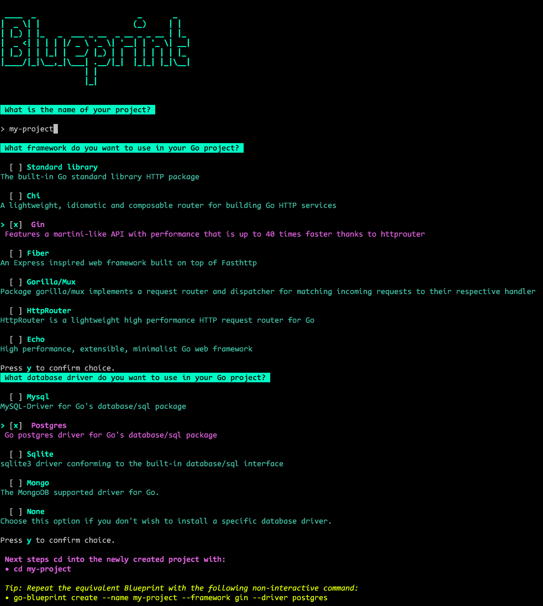
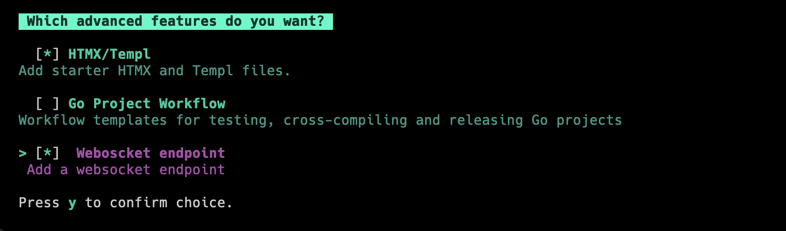

Creating a Project
After installing the Go-Blueprint CLI tool, you can create a new project with the default settings by running the following command:
go-blueprint create
This command will interactively guide you through the project setup process, allowing you to choose the project name, framework, and database driver.

Using Flags for Non-Interactive Setup
For a non-interactive setup, you can use flags to provide the necessary information during project creation. Here's an example:
go-blueprint create --name my-project --framework gin --driver postgres
In this example:
--name: Specifies the name of the project (replace "my-project" with your desired project name).--framework: Specifies the Go framework to be used (e.g., "gin").--driver: Specifies the database driver to be integrated (e.g., "postgres").
Customize the flags according to your project requirements.
Advanced Flag
By including the --advanced flag, users can choose one or all of the advanced features, HTMX, GitHub Actions for CI/CD and Websocket support, during the project creation process. The flag enhances the simplicity of Blueprint while offering flexibility for users who require additional functionality.
go-blueprint create --advanced
To recreate the project using the same configuration semi-interactively, use the following command:
go-blueprint create --name my-project --framework chi --driver mysql --advanced
This approach opens interactive mode only for advanced features, which allow you to choose the one or combination of available features.

Non-Interactive Setup
Advanced features can be enabled using the --feature flag along with the --advanced flag:
For HTMX:
go-blueprint create --advanced --feature htmx
For the CI/CD workflow:
go-blueprint create --advanced --feature githubaction
For the websocket:
go-blueprint create --advanced --feature websocket
Or all features at once:
go-blueprint create --name my-project --framework chi --driver mysql --advanced --feature htmx --feature githubaction --feature websocket